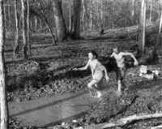

<!DOCTYPE HTML PUBLIC "-//W3C//DTD HTML 4.01 Transitional//EN"        "http://www.w3.org/TR/html4/loose.dtd">
<html lang="en">

<head>
<title>Johnye Strickland:&nbsp; &quot;Jo McDougall, From Farm Wife to Poet: 
Metamorphosis of a Southern Writer&quot; - Henderson State University</title>
<meta http-equiv="Content-Language" content="en-us">
<meta http-equiv="Content-Type" content="text/html; charset=windows-1252">
<meta name="GENERATOR" content="Microsoft FrontPage 5.0">
<meta name="ProgId" content="FrontPage.Editor.Document">
<meta name="copyright" content="Copyright © 2002 Henderson State University">
<meta name="rating" content="General">
</head>

<body background="ARlogoborder.jpg" link="#006600" vlink="#006600" alink="#006600" bgcolor="#FFFFFF"><div style="background:#241b2e;color:#fff;font-family:Arial,sans-serif;font-size:13px;padding:6px 14px;text-align:center;position:relative;z-index:9999;display:flex;align-items:center;justify-content:center;gap:10px;flex-wrap:wrap;"><span><a href="/books/arkansas-literary-forum" style="color:#fff;text-decoration:underline;">‚Üê Back to MarckBeggs.com</a> &nbsp;|&nbsp; <span style="opacity:.75;">Arkansas Literary Forum archive, preserved as originally published</span></span></div>

<div align="right">
  <table border="0" width="85%">
    <tr>
      <td width="100%" align="left">
        <blockquote>
          <p class="MsoHeader" style="tab-stops:.5in"><b><span style="font-size:18.0pt;
mso-bidi-font-size:12.0pt;font-family:Arial"><font color="#006600">Johnye
          Strickland</font><o:p>
          </o:p>
          </span></b></p>
        </blockquote>
        <p class="MsoNormal"><b>Jo
        McDougall, From Farm Wife to Poet: Metamorphosis of a Southern Writer<o:p>
        </o:p>
        </b></p>
        <p class="MsoNormal"><b><font size="6"><a href="images/slattonS.jpg">
        </a></font><font color="#006600" size="5">J</font></b>o McDougall grew up on a rice farm carved out by her grandfather
        in the Arkansas Delta, near DeWitt.<span style="mso-spacerun: yes">
        </span>Her husband also came from an agrarian background.<span style="mso-spacerun: yes">
        </span>When they went to the University of Arkansas, they majored in
        Home Economics and Agriculture, since they expected to spend the rest of
        their lives as rice farmers.<span style="mso-spacerun: yes"> </span>But
        as often happens when youíve made plans, life intervened.<span style="mso-spacerun: yes">
        </span>In her forties, McDougall returned to the University to get an
        MFA.<span style="mso-spacerun: yes"> </span>Since that time she
        has taught Creative Writing at Northeast Louisiana University,
        Pittsburgh State University at Pittsburgh, Kansas, Hendrix College in
        Conway, Arkansas, and the University of Arkansas at Little Rock.<span style="mso-spacerun: yes">
        </span>She has held three McDowell Colony Fellowships.<span style="mso-spacerun: yes">
        </span>With Miller Williams, she presented a Symposium for High School
        and Junior High School teachers on teaching poetry to students, at
        Pittsburgh, Pennsylvania, in December 1999.<span style="mso-spacerun: yes">
        </span>A film entitled <i>Emerson County Shaping Dream, </i>based on her
        dramatic monologues, is scheduled for release in 2000.</p>
        <p class="MsoNormal">While living in Kansas, which has its distinctive Midwestern
        culture, McDougall came to understand her own cultural heritage.<span style="mso-spacerun: yes">
        </span>She began to explore her claim to the South, as Willie Morris had
        done in <i>North Towards Home</i>.<span style="mso-spacerun: yes">
        </span>(Interview 1998)<span style="mso-spacerun: yes"> </span>In <i>Roots
        and Recognition: Where Poetry Comes From</i>, an Occasional Paper
        published at Pittsburgh State University in 1994, McDougall speaks of a
        ëpalpable Southern Mindset,í which contains recognizable elements
        such as a love of storytelling; absurdity; a heightened sense of family
        and history, in addition to a ëfierce . . . addiction to placeí; the
        awareness of defeat and guilt, which came with the loss of the Civil War
        (<i>Roots </i>11); and the Gothic elements of ëviolence, desolation,
        and decay.í<span style="mso-spacerun: yes"> </span>(Arkansas
        Writersí Conference, 1997)</p>
        <p class="MsoNormal">One of the major features of McDougallís poems is storytelling,
        which she identifies as a Southern element.<span style="mso-spacerun: yes">
        </span>In style, she is a minimalist.<span style="mso-spacerun: yes">
        </span>Yet she can pack a sense of the profound, couched in simple
        language, into an eight line poem.<span style="mso-spacerun: yes">
        </span>One such poem is entitled ëLabor Day,í from <i>The Woman in
        the Next Booth</i> (9):</p>
        <blockquote>
        <p class="MsoNormal">The boyís mother hears it on the radio.<span style="mso-tab-count:1"><br>
        </span>A fishing boat has been found.<span style="mso-tab-count:1"><br>
        </span>She walks through the house,<span style="mso-tab-count:1"><br>
        </span>reassuring the backs of chairs.</p>
        <p class="MsoNormal">Her husband comes from the lake.<span style="mso-tab-count:1"><br>
        </span>Dusk filters through the screen.<span style="mso-tab-count:1"><br>
        </span>Sit down, he says.<span style="mso-tab-count:1"><br>
        </span>He puts his hat on the table.</p>
        </blockquote>
        <p class="MsoNormal">In addition to storytelling, the Southern sense of
        family combined with the poignancy of loss appears.</p>
        <p class="MsoNormal">This poem has a particular resonance for me.<span style="mso-spacerun: yes">
        </span>As the former wife of a man who in his youth insisted on going
        fishing alone, in remote areas, without letting anyone know where he was
        going to be or when to expect him home, I sense this womanís anxiety.<span style="mso-spacerun: yes">
        </span>And as the mother of a son who died suddenly from a common
        childhood illness, I understand her frozen disbelief.<span style="mso-spacerun: yes">
        </span>But aside from my own reader response, I have found various
        audiences responsive to it as well.<span style="mso-spacerun: yes">
        </span>I use it in my Arkansas Writers class, and I have used it
        successfully in workshops with poets and in a recent talk to a group of
        women business owners.</p>
        <p class="MsoNormal">Most of McDougallís poems involve storytelling.<span style="mso-spacerun: yes">
        </span>And at least one of them contains a storytelling character, with
        an implied audience:</p>
        <blockquote>
        <p class="MsoNormal">. . . One summer we owned the Lincoln,<br>
        next we didnít . . . .<br>
        Mother blamed the Lincoln on Darrellóthat was my husband.<br>
        She said he was drinking.<span style="mso-spacerun: yes"> </span>Would
        you like a Scotch?</p>
        </blockquote>
        <p class="MsoNormal" align="right"><o:p>(ëA Bottomlands Farmerís Widow Remarries and
        Speaks of the Killing,í in <i>From Darkening Porches</i> 6)
        </p>
        <p class="MsoNormal">This poem is also an example of the Gothic elements of violence
        and decay, and of the fear of loss.<span style="mso-spacerun: yes">
        </span>The central story is of a trial, ëwhen the lawyers held up the
        panty hose and bra / Darrell was supposed to be wearing the night he was
        killed.í<span style="mso-spacerun: yes"> </span>The narrator
        speaks of ërotted crops,í and of ënight [that] comes down smelling
        like a cottonmouth,í which reflect decay.<span style="mso-spacerun:
yes"> </span>Her fear of loss is expressed with respect to her ëoldest,
        Ginny, / which [she] donít know to this day / where she is.í</p>
        <p class="MsoNormal">McDougall considers her most Southern poem to be one entitled
        ëHarlot Hag Dry Harpieí (<i>Woman </i>19).<span style="mso-spacerun: yes">
        </span>When I first encountered this poem, I thought it must have been
        written for a creative writing class: Take this list of words and use as
        many of them as you can in a poem.<span style="mso-spacerun: yes">
        </span>But according to McDougall, that was not the case.<span style="mso-spacerun: yes">
        </span>This is one of the few poems which, she says, came looking for
        her.<span style="mso-spacerun: yes"> </span>As she was waking up
        one morning, the phrase ëPomegranate sequin dove my harlot hag dry
        harpieí came to her.<span style="mso-spacerun: yes"> </span>Then
        the characters in the poemófirst the woman, then the manóappeared in
        her room, which she says is unusual for her (either to visualize
        characters or to have a recognizable visit from the Muse.<span style="mso-spacerun: yes">
        </span>Usually her poems begin with an incident she has witnessed, or a
        person she has known, she says.<span style="mso-spacerun: yes"> </span>Interview
        1998).</p>
        <p class="MsoNormal">The ëHarlot Hag Dry Harpieí poem is about a ëwoman from
        Opelousasí (note the sense of place), who came to live with a circus
        barker ëwho had lived with an alligator lady, and Siamese twins.í<span style="mso-spacerun: yes">
        </span>According to McDougall, she was a ësilly woman,í the kind you
        find in the South who will do anything to please a man, such as ëpaint
        a harelip on herself, / tape down an eyelid, paint her nose black, sleep
        on all fours.í<span style="mso-spacerun:
yes"> </span>I consider this poem to be McDougallís best representation
        of absurdity, but I donít see it as she does, as the most Southern of
        her poems.<span style="mso-spacerun: yes"> </span>When I asked her
        why she thought of it this way, she said it was characteristic of the
        sleaziness, of both the circus and of small Southern towns, where such
        ësilly womení can be found.<span style="mso-spacerun: yes"> </span>She
        had in mind a particular circus which came to DeWitt when she was a
        child.<span style="mso-spacerun: yes"> </span>Her mother told her
        not to go, but she and a friend went anyway.<span style="mso-spacerun: yes">
        </span>(Interview 1998)</p>
        <p class="MsoNormal">McDougall writes often about relationshipsóbetween men and
        women, between families and place, between women and houses.<span style="mso-spacerun: yes">
        </span>And hovering in the background is the threat of loss or decay.<span style="mso-spacerun: yes">
        </span>In ëDreaming the Kiní (<i>From Darkening Porches</i> 23) the
        narrator sees her ëgrandfather in a field of corn,í but he doesnít
        see her.<span style="mso-spacerun: yes"> </span>She enters her
        ëgrandmotherís kitchen,í where her grandmother is ëcanning
        sausageí and her ëaunt sits folding clothes.í<span style="mso-spacerun: yes">
        </span>Neither of them notices her, prompting her to wonder if sheís
        ëcome to the wrong house,í though she remembers the dishes with
        ëred and yellow flowers chipping on the rims.í</p>
        <p class="MsoNormal">A typical relationship poem is ëThe Bluebird CafÈ,í one of
        several set in small town cafÈs or coffee houses.<span style="mso-spacerun: yes">
        </span>(<i>Woman</i> 25)<span style="mso-spacerun: yes"> </span>It
        reads:</p>
        <blockquote>
        <p class="MsoNormal">Eating alone<span style="mso-tab-count:1"><br>
        </span>I shuffle a magazine<span style="mso-tab-count:1"><br>
        </span>turn the coffee cup<span style="mso-tab-count:1"><br>
        </span>light a cigarette.<span style="mso-tab-count:1"><br>
        </span>There is no one here except for one<span style="mso-tab-count:1"><br>
        </span>waitress, a cook I canít see,<span style="mso-tab-count:1"><br>
        </span>me, and one old woman in a booth.<span style="mso-tab-count:1"><br>
        </span>Why didnít you come home last night?</p>
        </blockquote>
        <p class="MsoNormal">Another relationship poem which also reflects loss, decay of a
        sort, and sense of family is ëHow It Sometimes Happens to a Man That a
        Noble Heart and Purpose Come to Dwell Within Him.í<span style="mso-spacerun: yes">
        </span>(<i>Darkening</i> 34)<span style="mso-spacerun: yes"> </span>A
        man who goes home to his wife sits after supper ëwith his drink on the
        darkening porch. / He would like to give to the woman / his love, his
        life, his fatherís pocket watch. / He hears his wife / knitting in the
        dark.í</p>
        <p class="MsoNormal">McDougall often writes about women (men too, but more women I
        think) who lead marginal lives.<span style="mso-spacerun: yes"> </span>In
        her own words, she says she writes about people in small towns, ënot
        very successful people, maybe . . . A lot of the women are alone, and a
        lot of them are down on their luck.í<span style="mso-spacerun: yes">
        </span>(Interview 1998)</p>
        <p class="MsoNormal">One of her most typically Southern poems, in my opinion, is
        called ëThe Menial.í<span style="mso-spacerun: yes"> </span>(<i>Woman</i>
        30)<span style="mso-spacerun:
yes"> </span>It reads in part:</p>
        <blockquote>
        <p class="MsoNormal" align="left">Each woman keeps another woman<span style="mso-char-type: symbol; mso-symbol-font-family: Symbol; font-family: Symbol; mso-ascii-font-family: Times New Roman; mso-hansi-font-family: Times New Roman">æ</span>&nbsp;
        . . .<br>
        Who comes through a small gate when we call her<br>
        To cook, . . .<br>
        To suckle our young<br>
        Even to bed down in our names<br>
        To make love in our names<br>
        To have our children<br>
        She will do almost anything except<br>
        Dig in the ground a rectangle<br>
        Sink into that a box with a lid<br>
        Climb into that naked.</p>
        </blockquote>
        <p class="MsoNormal">McDougall intended this poem to depict the white Southern woman
        who, even though she might not be particularly well off herself, could
        still afford to hire another woman to work for her.<span style="mso-spacerun: yes">
        </span>I read it instead as a reflection of the bifurcated mind which
        was typical of Southern women of my grandmothersí generation.<span style="mso-spacerun: yes">
        </span>These women could convince themselves that they conformed to the
        biblical command to ëLove thy neighbor as thyself,í but then refuse
        to let their children play with the child next door because his mother
        was ëno better than she should be.í<span style="mso-spacerun: yes">
        </span>Or to bring it a bit closer to home, the women of my generation
        who were capable of thinking of themselves as perfectly chaste in mind
        and body while at the same time they might be ëfooling aroundí with
        their boyfriend.<span style="mso-spacerun:
yes"> </span>I see the menial not as a real hired servant, but as the
        person who does the chores which were supposedly beneath the Southern
        woman herselfóthe cooking, perhaps; certainly the cleaning.<span style="mso-spacerun:
yes"> </span>And often the ëmaking love.í<span style="mso-spacerun: yes">
        </span>After having been told all her life that sex was wrong, and that
        if she seemed to know anything about it her husband would think she was
        a slut, how could she be expected to put her whole self into the
        situation?</p>
        <p class="MsoNormal">As far as having someone else bear her childrenówhich I can not
        see a menial in the flesh being able to doóthe PBS stations in
        Arkansas in their 1998 and 1999 fund raising marathons aired a two hour
        video with Dr. Christiane Northrup, a woman obstetrician in Maine, who
        made the point that when she had her first child, even though she had
        been trained as a doctor to know what the process of birth entailed, she
        felt as though her body was in one place and her mind was completely
        divorced from the event, partly because she was so heavily drugged,
        which was the practice at the time, but also because everything about
        the birthing was totally impersonal, as though the woman herself were
        not there.<span style="mso-spacerun: yes"> </span>(<i>Womenís
        Bodies, Womenís Minds)<o:p>
        </o:p>
        </i></p>
        <p class="MsoNormal">At the end of ëThe Menial,í when the woman cannot get the
        surrogate to climb naked into the box with a lid for her, I see that as
        the same kind of ending McDougall often uses in her poemsóa turn or
        twist, with an emotional impact or a meaningful insight.<span style="mso-spacerun: yes">
        </span>The woman is at last presented the opportunity to reconcile the
        opposing ideas or emotions of her lifeóto jettison the inherited
        baggage and discover her own identity.<span style="mso-spacerun: yes">
        </span>And while I originally assumed the death to be death itself, I
        now donít think it needs to be.<span style="mso-spacerun:
yes"> </span>It can be a symbolic death, representing a choice for the
        Southern woman to reject the identity imposed on her by her culture and
        to reinvent herself in the form she herself creates, as many women have
        done in the past thirty years.</p>
        <p class="MsoNormal">McDougallís sojourn in Kansas, in addition to giving her a
        better perspective on her Southern roots, also provided her with lessons
        about Midwestern people, as well as about herself.<span style="mso-spacerun: yes">
        </span>For one thing, she learned to be more honest, ëgetting out of
        that Southern habit of double talk, where one has to read between the
        lines.í<span style="mso-spacerun: yes"> </span>She thinks there
        was an influence on her work as wellónot only in subject matter (while
        in Kansas, she wrote about things that were happening to her there, and
        about the effect the landscape had on her), but also in style.<span style="mso-spacerun: yes">
        </span>She learned to be ëless ornamental; less tending toward the
        grotesque; tending more toward plain talk, . . . flattened language.í<span style="mso-spacerun: yes">
        </span>(Interview 1999)</p>
        <p class="MsoNormal">Midwestern people are more attuned to the weather than
        Southerners, she thinks.<span style="mso-spacerun: yes"> </span>There
        is even a sense of danger associated with weather.<span style="mso-spacerun: yes">
        </span>In the winter, you can step outside your house and literally
        freeze to death.<span style="mso-spacerun: yes"> </span>Now that
        she is back in the South, she has retained that sense of the importance
        of weather.<span style="mso-spacerun: yes"> </span>Working on
        recent poems about her grandfatherís farm near Cabot, Arkansas,
        brought the realization that she could not remember a time visiting in
        the summer when his crops were not burned up, in the days before
        irrigation became accessible.</p>
        <p class="MsoNormal">She also learned that Midwestern people have a strong sense of
        stoicism.<span style="mso-spacerun: yes"> </span>They too suffer
        adversities, but they never complain.<span style="mso-spacerun: yes">
        </span>They endure.<span style="mso-spacerun: yes"> </span>Even
        the women donít complain, nor do they share stories with friends about
        what happens to them, as Southern women are wont to do.<span style="mso-spacerun: yes">
        </span>Midwesterners are proud of their history, but they do not have
        the deeply ingrained sense of loss or failure, or even the strong sense
        of the past that their Southern counterparts have.<span style="mso-spacerun: yes">
        </span>Nor do they have the strong sense of <i>sin</i> and <i>guilt</i>
        that every Southerner is confronted with in the fundamentalist religions
        that pervade the South, where God and the Devil are seen to be in a
        continuing battle for the individualís soul.<span style="mso-spacerun: yes">
        </span>Kansas is not without its failures and fundamentalists; but they
        do not dominate the atmosphere as they tend to do in the South,
        particularly in the small towns such as DeWitt and Stuttgart, where
        McDougall spent her formative years.<span style="mso-spacerun: yes">
        </span>(Interview 1999)</p>
        <p class="MsoNormal">Jo McDougall has recently completed the manuscript of her fourth
        book of poems (<i>Sleeping With the Light On</i>) and is in the process
        of submitting it to prospective publishers.<span style="mso-spacerun: yes">
        </span>This book differs from her earlier work in several ways.<span style="mso-spacerun: yes">
        </span>For one thing, she has consciously sought to write longer poems,
        with more narrative, more of a statement.<span style="mso-spacerun: yes">
        </span>Formally, she concentrates more on the use of rhyme and meter,
        rather than the free verse or blank verse she is noted for in her
        previous work.<span style="mso-spacerun:
yes"> </span>One poem in particular, entitled ëThe Circle in the
        Ground,í consists of two and a half pages of rhyming quatrains
        celebrating ëa sense of community and a sense of place, and keeping up
        with the values that make a community and how that should extend on into
        the next century.í (Interview 1999)</p>
        <p class="MsoNormal">In this new book, McDougall finds herself delving more into
        memory for subject matteróparticularly memories of visiting her
        maternal granparents on their ërock bitten farm close to Cabot.í<span style="mso-spacerun: yes">
        </span>She combines the memories of ëthose times in that houseí with
        her mature understanding of the struggle her grandparents (and by
        extension, farmers everywhere during the Depression) had to go through
        ëjust to eek out a living.í<span style="mso-spacerun: yes"> </span>(Interview
        1999)</p>
        <p class="MsoNormal">The theme of loss is also strong in this book, especially the
        loss of place.<span style="mso-spacerun: yes"> </span>The poetís
        grandparentsí farm and house are lost, no longer there, having been
        replaced, she thinks, by a housing development.<span style="mso-spacerun: yes">
        </span>Even the house she grew up in is lost to her, and knowing that
        she will never be able to enter it again brings a sadness that is
        reflected in these poems.<span style="mso-spacerun:
yes"> </span>While she was working on this manuscript, McDougall
        experienced one of the most poignant types of loss in the death of her
        own daughter, which she writes about as well.</p>
        <p class="MsoNormal">But all is not loss and sadness in the new book.<span style="mso-spacerun: yes">
        </span>There is also a sense of joy, and a sense of humor in some of the
        poems.<span style="mso-spacerun: yes"> </span>For example, one
        poem called ëLove Storyí is about a woman who falls in love with a
        man with a bald spot, and does ëfantastical things about that,í such
        as putting up ëa little umbrella on top of his bald head, against the
        sleet.í<span style="mso-spacerun: yes"> </span>Another poem
        depicts a woman and man who are ëinto voodoo,í and can ëmake each
        other appear . . . at will.í<span style="mso-spacerun: yes"> </span>She
        still writes love poems, but in this collection they tend to be about
        ëmarried love.í<span style="mso-spacerun: yes"> </span>(Interview
        1999)</p>
        <p class="MsoNormal">I look forward to seeing the poems in this fourth book, and to
        the completion of<span style="mso-spacerun: yes"> </span>the
        memoir she is currently working on.<span style="mso-spacerun: yes">
        </span>I have been an admirer of her work since I first discovered a
        remaindered copy of <i>The Woman in the Next Booth</i> on a sidewalk
        cart in front of Lorenzanís Bookstore in Little Rock in the late
        1980s.<span style="mso-spacerun: yes"> </span>It is always
        rewarding to observe the growth of a writer, and a person, over time (in
        this case, more than two decades).<span style="mso-spacerun: yes">
        </span>Jo McDougall continues to experiment with her craft, and to
        explore her own perceptions of the world in her time and place, in order
        to share them with her readers.<span style="mso-spacerun: yes"> </span>It
        is a world worth sharing, especially for readers with an interest or
        roots in the South.<span style="mso-spacerun:
yes"> </span>Her work deserves to be better known.</p>
        <hr>
        <p class="MsoNormal"><b>Works Cited<o:p>
        </o:p>
        </b></p>
        <p class="MsoNormal">Interview: Jo McDougall by Johnye Strickland.<span style="mso-spacerun: yes">
        </span>March 26, 1998.</p>
        <p class="MsoNormal">Interview: Jo McDougall by Johnye Strickland.<span style="mso-spacerun: yes">
        </span>December 13, 1999.</p>
        <p class="MsoNormal">McDougall, Jo.<span style="mso-spacerun: yes">
        </span><i>From Darkening Porches.<span style="mso-spacerun: yes"> </span></i>Fayetteville.<span style="mso-spacerun: yes">
        </span>University of Arkansas Press.</p>
        <p class="MsoNormal">1996.</p>
        <p class="MsoNormal">_________.<span style="mso-spacerun: yes"> </span><i>Roots
        and Recognition: Where Poetry Comes From.<span style="mso-spacerun: yes">
        </span></i>Pittsburgh, Kansas.&nbsp; Friends of Timmons Chapel, Pittsburgh State University.<span style="mso-spacerun: yes">
        </span>1994.</p>
        <p class="MsoNormal">_________.<span style="mso-spacerun: yes"> </span><i>Towns
        Facing Railroads.</i><span style="mso-spacerun: yes"> </span>Fayetteville.<span style="mso-spacerun: yes">
        </span>University of Arkansas Press.<span style="mso-spacerun: yes">
        </span>1991.</p>
        <p class="MsoNormal">_________.<span style="mso-spacerun: yes"> </span><i>The
        Woman in the Next Booth.<span style="mso-spacerun: yes"> </span></i>Kansas
        City: BkMk Press, University of&nbsp; Missouri-Kansas City.<span style="mso-spacerun: yes"> </span>1987.</p>
        <p class="MsoNormal">Northrup, Christiane.<span style="mso-spacerun: yes">
        </span><i>Women's Bodies, Women's Minds</i>.<span style="mso-spacerun: yes">
        </span>90 minute video.<span style="mso-spacerun: yes"> </span>Available
        from JWA/Video.<span style="mso-spacerun: yes"> </span>Chicago.</p>
        <p class="MsoNormal">_________. <i>Women's Bodies, Women's Wisdom.<span style="mso-spacerun: yes">
        </span></i>New York.<span style="mso-spacerun:
yes"> </span>Bantam Books.&nbsp; Revised edition, 1998.</p>
        <p class="MsoNormal"><span style="font-size:10.0pt;mso-bidi-font-size:12.0pt">*An
        earlier version of this paper was presented at the Southern Women
        Writers Conference at Berry College, Mount Berry, Georgia, April 17,
        1998.<o:p>
        </o:p>
        </span></p>
        <p class="MsoNormal"><span style="font-size:10.0pt;mso-bidi-font-size:12.0pt"><o:p>
        </o:p>
        </span></p>
        <p class="MsoNormal" align="right"><o:p>
        <font size="2">(Photo by S. Slatton)</font></o:p>
        </p>
      </td>
    </tr>
  </table>
</div>

<p align="center"><a title="Select to go to the Home Page" href="2000.html">HOME</a></p>

</body>

</html>